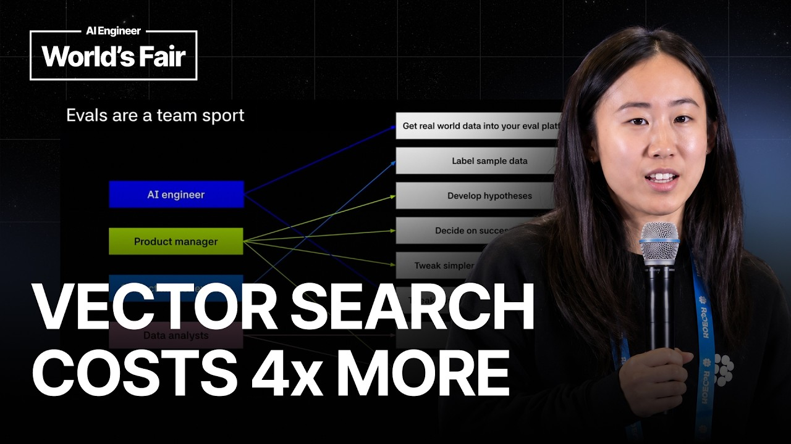

Agentic Search vs Vector Search for Coding Agents: We Ran the Eval — Braintrust

Intro
Everyone, I'm Jess. I'm from BrainTrust. I'm a dev rel engineer at BrainTrust, and in this talk today, I'm going to be teaching you guys what evals are, why they're important, and then I'm going to be talking through a relatively complex real-life eval that I did to try to solidify some of the concepts I'm about to teach you. Uh before we get started, has Can you just raise your hand if you've heard of evals before or like would confidently say that you know what they are? Okay, cool. Pretty much everyone here. Makes sense.
What evals are
Um cool. So, I'm just going to start off with a basis of what evals are, why they're important. Um I've been on um calls with customers where they've said that they've shipped features because either the engineering team told them that it was ready or maybe a PM said that they tried out a couple of prompts, and they said it looked good. Uh and this is what
Don't ship on vibes
you don't want to hear cuz essentially, these teams are making ship decisions based off of vibes, uh which is not good. Uh and essentially, what you want to hear is more something like, "Oh, I ran um 200 different test test cases, and 94% of them passed, and that's why we're shipping this feature." Or be able to say nuanced things like, um you know, "I shipped this feature that increased accuracy by 5%, but actually
What evals answer
decreased tone by 5%." So, when people ask me what evals are, I think the best way to answer it is that it's just a way to answer questions about your AI system. So, for example, uh which LLM is the best choice for our needs? Especially when there's new models dropping all the time, it's good to be able to have data to back up your decisions. Uh how does AI perform across diverse real-world scenarios? So, for example, your system could do really well with English outputs, but not Japanese or English inputs but not Japanese or types uh do really well with Python but not TypeScript. Um a big one is cost efficiency. So, how can we achieve high performance without excessive costs? This is definitely becoming more topical now. Uh brand consistency. So, does AI reliably affect our company's voice and standards? Uh feedback. Are we learning from users and improving iteratively? And then one of the biggest ones is how do we know when
something breaks or gets worse?
The sycophancy rollback
So, a real-world scenario that I like to use a lot is uh about a year ago, so April of 2025, um OpenAI actually shipped a model change and model update um that essentially made their model more was supposed to make it more helpful but actually made it sycophantic and therefore uh too agreeable and therefore less truthful. So, this is a really good example of where evals can help you catch that um especially because uh AI systems are so complex and undeterministic that it's really important to have these eval systems in place at your company or whatever you're trying to build.
So, we're going to get down into more of
The four parts of an eval
the specifics of what evals are comprised of. So, evals comprise of four main things. Uh the first thing is a data set. So, this is the data that you're passing into your AI system and it usually includes things like uh your golden standard uh cases, your edge cases, your failure modes. Um then once you have your data set, you want to write a task. So, a task defines how you want your AI system to behave when it takes in the input and produces an output. So, concretely this usually includes a system prompt and then the model that you're picking to execute this task.
Then the next thing you need to do is you need to write a scoring system that will tell you whether the AI's output is good or bad. Um and so usually it's uh maybe the PM or engineer that is writing the criteria that comprises that goodness and badness. Uh, and you might have heard of terms like uh deterministic scoring, LLM as a judge, human in review. Those are different types of scoring um frameworks. Uh, but yeah, that's so you write your scoring system. And then the last thing you do, which is the most fun part of writing evals, is you experiment. So, every configuration of a specific data set, a specific task, and a specific scoring system equals to one experiment. And as you are testing out different hypotheses for how to make your system better, you're tweaking either your data set, your task, or your scoring system, and these all lead to
Comparing experiments
different experiments. So, once you have your different experiments, then you start to compare them. So, you might run experiment one and experiment two, and you can see whether there's been improvements or regressions. And you can also uh click into specific rows to see exactly which test cases have changed. Uh, this screenshot is from the Braintrust UI.
Querying traces in plain English
Another thing that you can do is you can use uh natural language to query across your traces and experiments. Um, so for example, you can ask it things like summarize my experiments for me, um highlight the problems in these experiments. Um, I find this especially useful when you're running experiment or you're running like um tra- you see traces with like long multi-turn conversations, it's good for um helping you catch things like hallucination or drift that's kind of hard to catch manually. Um, you can also if you're running different experiments, you can ask it like which performance or which experiments performed the best off of out of all of these experiments.
Um So, this is another way you can like find patterns in your traces. Um, we also this is using like the UI in Braintrust, but we also have a CLI and MCP server if you prefer to do it that way as well. Um, and then the last pillar of
Observability
Braintrust is just like regular observability. So, you can basically use the Braintrust SDK to wrap your code um and then uh have your production logs show up in Braintrust and essentially do traditional observability where you can
The eval flywheel
monitor your production logs and create dashboards and things like that. Um, so kind of to tie this together, I'm going to walk you through kind of a flow of how you might use observability and evals to improve your AI system. So, we're going to start on the top left corner where it says app. So, imagine you have some sort of AI application. Uh in this scenario, I'll say you have a a new docs page that you just shipped with like an AI chatbot built in so that users can ask questions to your AI chat chatbot about your documentation. So, let's say you shipped that yesterday.
And then you have customers start to use your AI chatbot. So, when they start to hit your AI chatbot, you're going to start to get real production logs coming into your system. Once you get those production logs, you can uh sample a subset of them, maybe like 10 to 20 rows or something, and create a kind of data set. Uh once you get that data set, then we can run evals on that, right? So, you can you have your data set, you can write your task, and you can write your scoring system, and you can run uh evals on them. And you can start to tweak your data set, you can start to tweak your prompts or you tweak your score and run multiple different evals on that. Once you have your evals like run a couple different evals um and start to see which eval does the best, you might learn something about your system, and then you're going to go ahead and make your code change or make a change to whatever AI system that you're using uh
and then deploy that back into your application, and then the whole flow repeats again because uh those changes will show up in your production logs and the whole system happens again. So, that's kind of how the flow works as a whole. Um, the last slide I'll show before I get into a concrete example is I love this slide because uh conceptually I I
Evals are a team sport
want to hammer into people that evals are a team sport. Uh, there's so much that goes into creating evals uh from getting real-world data into your platform, labeling it, developing hypotheses, things like that. So, the AI engineer kind of works on obviously making the code changes, but also getting the data into the platform. Uh, the product manager is very important. I think they're they're usually spearhead evals at a company, but they're the ones that develop the hypothesis of what success looks like, um and help uh tweak tweak the prompts and things like that.
Uh, subject matter experts are really important, especially in like more niche uh areas like um insurance, medicine, law, and things like that. Um, they can help uh label the data or provide a ground truth for what what excellence looks like. Uh, and then data analysts obviously to analyze the data. So, I always think that this slide is is really useful to look at. Okay. So, let's go into a like
The experiment: agentic vs vector search
interesting real-world example of how you might use an eval. Um, in this one I'm comparing agentic search to vector search. And the story behind this specific eval is um is that my CEO Ankur sometimes goes on Twitter and sends me articles of things he wants me to eval. Uh, so he sent me this uh tweet from Cursor where Cursor talks about how they used semantic search, also known as agentic search, um to significantly improve their coding agent uh performance. And he was like, "Jess, can you eval this for me?" And I was like, "Okay. I'm busy, but okay." Um, and so I kind of went on Twitter and I saw that there was a lot of uh discourse or discussion around this topic, so I thought it might be interesting to eval.
So, uh we're going to eval a vector search and agentic search, so I just
How vector search works
want to give a quick uh summary of what each one is just so everyone's on the same page. So, vector search essentially is the process of taking uh a data like uh code or text and turning them into embeddings where embeddings basically represent the semantic meaning of that chunk of text or code. So if you look at the graph here, it's a very good visual example where um the embeddings uh wolf, dog, and cat are very close to each other cuz semantically they all are animals. And then uh the embeddings banana and apple are also close to each other cuz they're fruit, but then uh they're far apart from each other because fruit and animals are different things. Um And so what happens is in, you know, um in a real vector search implementation, you would take these embeddings and store them in a vector database. So something like Qdrant or Pinecone or something like that. And if you come up with a query like, uh for example, where
does the database logic in my code base live? Uh what would happen is the vector database would return back the chunks of um embeddings that most closely semantically match the words in your query. So the the chunks that are closest to things like database or
How agentic search works
logic. So that's how vector search works. Agentic search is slightly different. Agentic search works more like a human would. So essentially with agentic search uh you give an LM tools like uh grep, find, ls, cat, um bash commands.
And it basically explores explores your code base like a human would. So it would uh look up a function name, open a file, read the file, follow that function call to another file, then open that file and read that file, and then continue until it's found what it's what it needs to. So this is uh much more similar to how a human would kind of go through a code base and and look up look for certain pieces of logic.
Building the dataset
Okay, so then how did we eval this? So the first part of creating eval is creating our data set, right? So to do this, we basically used uh Microsoft's TypeScript go repo, uh which is open source. And what we did is we basically found all the PRs, the merged PRs with the title fix in them. And we basically checked out the parent commit. So, essentially, we checked out the commit to the point where it still has the bug in it. And then we used Claude to generate a like a bug task or like a linear task based on the diff. So, based on the diff between the buggy code and the fixed code. And then we fed that into an LLM and had that LLM either use rag search or agentic search to find the buggy code, to locate where the logic, the buggy logic lives. So, that's how we created our data set. We had like maybe we we found like 20 different PRs and
Running both in Claude Code
and ran the eval on that. In terms of our task, we actually had to implement vector search and agentic search, obviously. Implementing agentic search was really easy because Claude code uses agentic search by default. So, we just set Claude code on these tasks. Implementing vector search was slightly more complicated because we still wanted to use the Claude code harness to execute the vector search, just to keep the experiment consistent. But we had to basically prevent Claude code from defaulting to agentic search. So, we did two things. The first thing is that we explicitly said in the prompt instructions not to use agentic search.
But if you've ever done this before, you know that prompting is never enough. So, what we also had to do is use the disallowed tools flag to prevent Claude code from calling certain things that it would normally use in agentic search. So, that's how we implemented vector search and agentic search, both using the Claude code harness.
Fixing orphaned traces
Another kind of interesting thing that we ran into is when we were trace running the traces, we ran the Claude code runs as sub processes, but it essentially mean meant that the traces were orphaned. Um, and uh, our solution was basically passing the parent span IDs as environment variables. So, if that doesn't make sense, that's fine because I'll show you via pictures. So, this picture that you see here is what the trace looks like when it's running as a orphaned sub process. So, you can see in the highlighted unlike the left panel where it says run Claude agent. Um, that's basically in the trace saying, "Okay, it's running the Claude sub process." But, you can't you don't actually get any visibility into what happens when it's running that Claude process.
With the fix that we did, uh, this is what you see now in the trace. So, you can see that it's calling the Claude code sub process, but you can also see everything that's being run in that sub process. So, you can see all the turns, all the LLM calls, every single terminal command that's being called like grep, bash, ls, find, things like that. Uh, and it gives you visibility into what's happening in this actual run. Uh, and implementing this fix was really important because being able to have transparency into what's happening, um, is is important for
Scoring with the test suite
debugging, uh, later on. And scoring was really simple. Uh, for our scoring we basically said, uh, "Because we're using Microsoft Microsoft's TypeScript Go repo, we basically said if the test uh, passed the uh, uh, Microsoft TypeScript Go test suite, then it gets 100% and if it fails it gets a 0%." So, it was very binary
Results: same accuracy, 4x the cost
scoring here. Uh, okay. So, in terms of our results, uh, the summary is basically vector search and agentic search both got the same level of accuracy, but essentially vector search cost, uh, four times more than agentic search. So, when we looked at the actual traces and uh, kind of manually like went through to try to understand what happened, we had a couple of learnings.
Why vector search fell short
So, the first thing is that vector search returns back chunks of code, but these chunks of code often miss things like imports or tool calls or the calling code above it. And so, as a result, it's not enough it doesn't give enough context for how the agent should actually solve the bug. So, one example is in one of the rows we saw that the vector agent made 26 searches and still couldn't piece together how three functions interacted across the file. In contrast, agentic search was actually able to like as I said, work more like a human would. So, grep the function name, read the full function, spot the flaw in the logic, and then follow the calling calling logic into another file.
And the way that I kind of like to think about it when I was just going through the traces, is it felt like vector search gave a lot of proximity to the correct code, but agentic search had more of the connective tissue to connect the actual logic of those chunks of code. And then tying that into the third learning I had is
Why it cost more
the reason why vector search was so much more expensive than agentic search is because it made more searches because it was constantly searching like returning a chunk of code and then searching again, returning a chunk of code, searching again. And as a result, all of those LLM calls piled up and made it a lot more expensive to execute.
Caveats and best practices
And this is the last slide, but essentially you might be sitting here thinking oh there's so many holes in this eval, which is very fair. Like there's lots of things I could have done. You know, there's lots of best practices when it comes to running evals like running multiple trials per task, especially because LLMs are so non-deterministic it's good to run multiple trials to be able to trust the score that you're getting back a lot better. My vector search implementation was relatively weak. Uh could have done a better implementation. Um also expanding the data set. Um I think we only ran this on like 20 different rows. So, it would have been better to expand this uh to even different um different repos or things like that. Uh but the the point of this talk is not to create the best uh off like the best eval ever, but it's more to illustrate to you the concept of the kind of how to create an eval end to end. So, hopefully I've done that. Um
and that is the end of my talk. Um so, hopefully you learned a little bit of what evals are, why they're important, and how you might do one in real life. Um and yeah, I think that's it. So, thank you for listening.